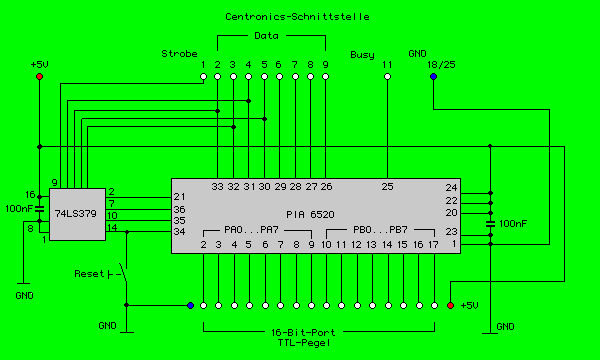

|
|
15.7.1 I/O-Interface
16-Bit I/O-Interface
Abbildung 1 - Ein 16 Bit I/O-Interface zu Anschluß an
den Druckerport
Das Interface wurde von mir auf einer Lochrasterplatine aufgebaut
und stellt 16 I/O-Leitungen zur Verfügung die je nach
Programmierung als Ein- oder Ausgangsport benutzt werden können.
 Abbildung 1 - Schaltung des I/O-Interface
In der abgebildeten Form fehlt allerdings jegliche
Schutzeinrichtung oder aber auch eine Leistungsstufe zum Schalten von
Lasten. Allerdings kann das hier sehr leicht mit Transistoren oder
Optokopplern schnell Nachgerüstet werden.Mit Optokopplern
erhält man gleichzeitig eine galvanische Trennung zwischen
Computerinterface und dem Lastteil der Schaltung. Atari Computer
können so sehr schnell und einfach Schaltaufgaben übernehmen
Über die Stiftleiste im Vordergrund können die
entsprechenden Signale entnommen werden.
|

|
|